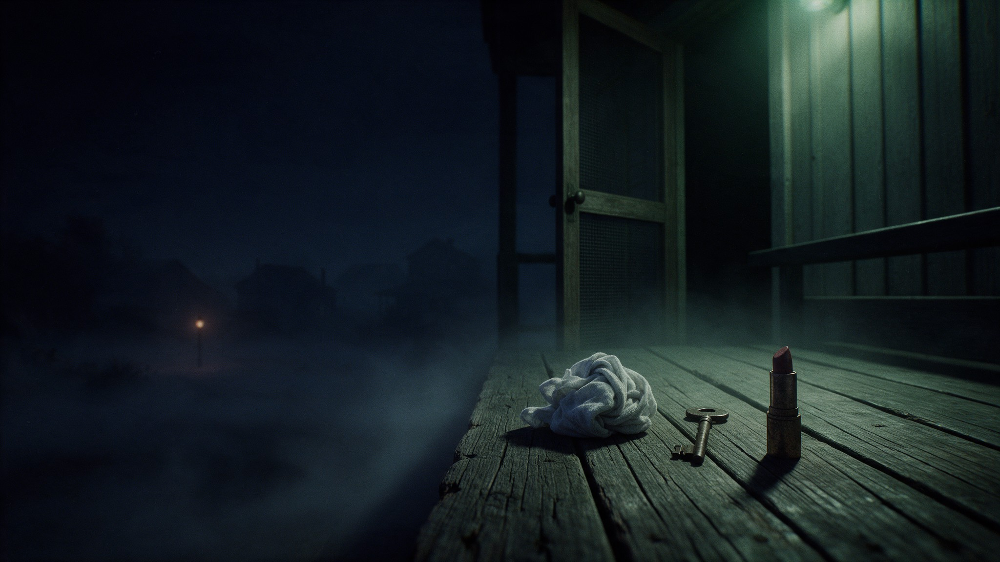

1 — ListenHear the debate
Each episode argues a case from two directions: the evidence, and the gut read.
2 — LookOpen the file
See what they were arguing over: the scene, the objects, the paperwork, the dates.
3 — DecideMake your own call
Nobody wins on the show. Weigh both readings and reach your own verdict.
Latest case file
Episode 13 · Updated each Sunday
UnsolvedMattoon, Illinois · 1944
The Mad Gasser of Mattoon
A small Illinois town reported a mysterious gas attacker in September 1944. Nobody was ever arrested, and one porch left physical evidence behind.
Open the case file →
Coming Sunday ·
Episode 14The Hall–Mills Murders
A minister. A choir singer. A crabapple tree in New Jersey, 1922. Eli and Simone argue over what the evidence can and can't prove.